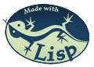

Indian Language Converter
(or) The Indian Script Converter
Select Language
Team
-
Akhila Bharathan
(அகிலா பரதன்
)
inspiration and dedicated to.
-
Vidya Sumankar
(பல்
மருத்துவர்
வித்யா
சுமன்கர்
)
language coordinator
-
Vijay Lakshminarayanan
(விஜய்
லக்ஷ்மிநாராயணன்
)
author
-
Prathap Parameswaran
(பிரதாப்
பரமேஸ்வரன்
പ്രതാപ്
പരമേശ്വരന്
)
language consultant, Tamil and Malayalam
-
Sumanth Naropanth
(ಸುಮಂತ್
)
language consultant, Kannada
-
Bharat Thyagarajan
(भरत
त्यागराजन
)
language consultant, Hindi
-
Yash Gadhiya
(યશ ગઢિયા
)
wrote the Gujarati page
Happy experimenting!
Copyright
All text is available under the terms of the
GNU Free Documentation License
.
NO WARRANTY
Indian Language Converter
version 3.0.1
, Copyright (C) 2005-2006
Vijay Lakshminarayanan
Indian Language Converter comes with ABSOLUTELY NO WARRANTY;
for details click
here
. This is free software, and you are welcome to redistribute
it under certain conditions; click
here
for details.



Last updated: Sunday 24 December 2006 14:11:53 -600